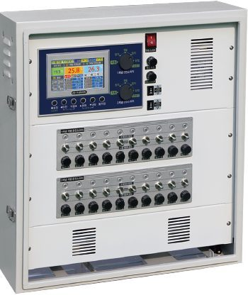

ROLL-UP MASTER · CONTROLLER
운전 방식에 맞는 롤업마스터를 선택하세요.
직접 조작하는 수동형부터 온도·시간·기상환경을 종합 관리하는 자동형까지 기능을 비교할 수 있습니다.
CONTROL TYPE
먼저 운전 방식을 선택하세요.
선택한 운전 방식에 해당하는 시리즈만 아래에 표시됩니다.
수동제어
사람이 개별 스위치를 직접 조작하는 가장 기본적인 방식

반자동제어
자체 수동운전과 센트럴 컨트롤러의 릴레이 신호 연동운전을 함께 사용하는 방식

센트럴 컨트롤러란?여러 환기창을 중앙에서 운전하기 위한 릴레이 신호 출력 장치입니다.⌄
센트럴 컨트롤러열림·닫힘 릴레이 신호 출력
›
D시리즈마그네틱 스위치가 신호 수신
›
전동개폐기환기창 열림·닫힘 작동
센트럴 컨트롤러가 전동개폐기를 직접 구동하는 것이 아니라, D시리즈에 운전 신호를 전달하고 D시리즈가 실제 개폐기 회로를 제어합니다.
수동 컨트롤러 초기 구입 비용이 비교적 낮으며, 자체 스위치를 이용한 직접 수동운전에 적합합니다.D시리즈 수동 컨트롤러보다 구입 비용은 높지만, 개별·전체 수동운전과 센트럴 릴레이 신호 연동이 가능합니다.
선택 기준 개폐기가 적고 직접 수동운전만 필요하면 수동 컨트롤러가 경제적입니다. 여러 개폐기의 전체운전이 필요하거나 향후 중앙제어 시스템으로 확장할 계획이 있다면 D시리즈가 유리합니다.
자동제어
필요한 채널 수와 시간·온도·기상환경 관리 수준에 따라 선택
CHANNEL GUIDE
채널이란?
채널은 개폐기 한 대가 아니라, 서로 다른 조건으로 독립 운전할 수 있는 제어 구역입니다.
자세히 보기접기⌄
채널이란?
채널은 개폐기 한 대가 아니라, 서로 다른 조건으로 독립 운전할 수 있는 제어 구역입니다.
컨트롤러

RVC-508총 8개 출력라인
온도제어 선택4개 라인 · 동일한 온도 설정으로 함께 작동
 1라인2라인3라인4라인
1라인2라인3라인4라인시간제어 선택4개 라인 · 동일한 시간 설정으로 함께 작동
5라인6라인7라인8라인채널독립된 조건으로 운전하는 제어 구역
라인·회로채널에 연결되는 개별 개폐기 출력선
연결 대수컨트롤러 한 대가 운전할 수 있는 전체 개폐기 수
WFTC 적용 예연동형 온실: 1중 환기창은 1채널 온도제어, 2중 환기창은 2채널 시간제어단동형 온실: 온실 구역을 나누어 한쪽은 온도제어, 다른 쪽은 시간제어
ⓘ 하나의 채널에 여러 개폐기를 연결할 수 있으며, 같은 채널의 개폐기는 동일한 조건에 따라 함께 작동합니다.
01
단일 기능 자동제어
한 채널에서 시간 또는 온도 중 선택한 기준으로 자동 관리


02
온도·시간 특화제어
시간대별 변온관리 또는 채널별 온도·시간 분리운전